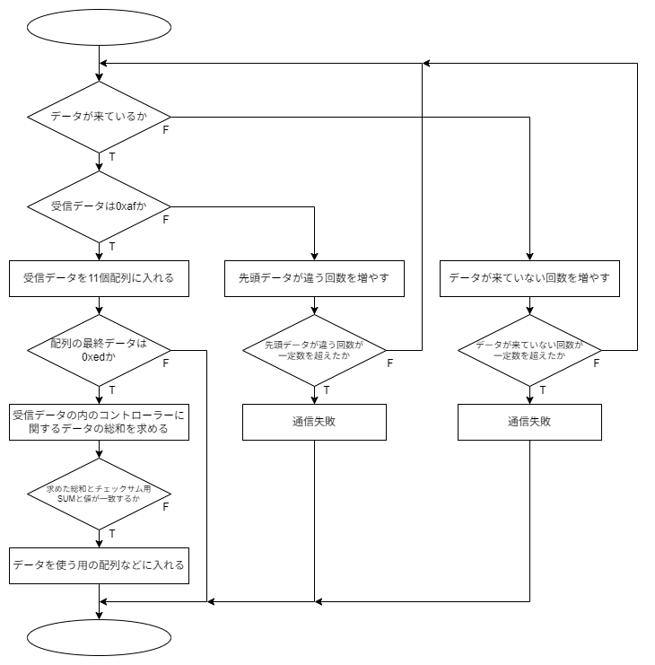
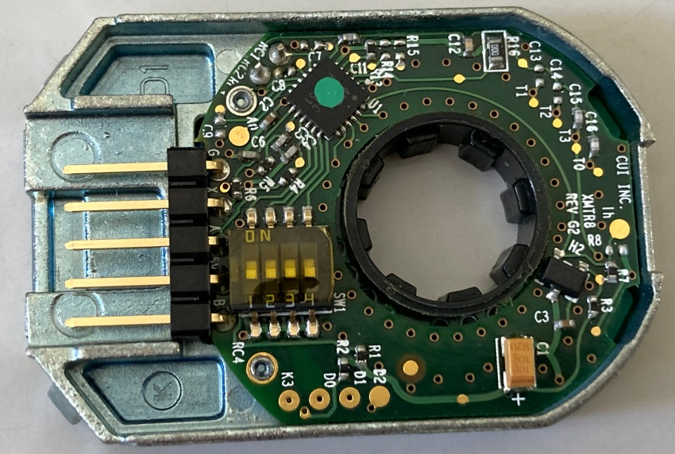

前提条件等
制御に関するお勉強・開発のHome
基本的にC言語を用いる。一部C++などの他の言語の知識が混ざる可能性もある。環境構築等はすでに済んでいるものとし、コードの内容のみになることがある。
各開発などのリポジトリは各ページに掲載していることもある。あくまで参考程度にしかならない。
一部に自作のヘッダファイルなどを使用する場合がある。その場合は、そのファイルの中身などを簡単に説明する記事を作るように心掛ける。
結局は自分で調べ、データシートなどを確認することがとても大事である。
使用環境
- Windows 11 Home
- Ubuntu 22.04 LTS
使用/使用予定のマイコン・マイコンボード一覧
基本的なこと
ここではプログラムを作成するにあたって必要になってくる知識を軽く解説。
コンテンツ一覧
gitコマンドの使い方
バージョン管理ツールgitの簡易的な使用方法をメモ。導入部分は省く。
リモートとの通信にはsshを使用する。
基本
clone
リモート(GitHubのサーバー)からリポジトリをローカル(自分のパソコン)に複製する。
git clone [remote URL]でカレントディレクトリにそのリポジトリのディレクトリが複製される。[remote URL]はGitHubから確認する。
GitHubに行きcloneしたいリポジトリのページまで移動する。緑色の<>Codeを押しLocalのCloneのSSHからコピーする。
add
ローカルで変更したファイルなどをリモートにあげるファイルを選択する。
git add [ファイル名1] [ファイル名2] …
commit
コミットを作成しリモートにpushする。addしたファイルをひとまとまりにする。
git commit -m "[コミットメッセージ]"
コミットメッセージには何を更新したのかなどの内容を書いておくとよい。
push
作成したコミットをリモートにあげる。git pushでリモートを更新する。
更新されたファイルなどがあるか確認
git statusで現在のリポジトリで更新されたファイルがあるかどうか、確認できる。
リモートの変更をもってくる
他の端末などで変更を加え、リモートに反映させた。手元には反映前のコードなどがある。というときにわざわざディレクトリを削除してもう一度cloneするのはめんどくさい。git pullを使用するとリモートの変更を反映させることができる。これはgit pull origin mainと同じことをしていて、リモートのmainブランチからfetch(変更をもってくるだけ
)とmerge(変更を反映させる)を同時に行う。mergeするときにローカルにリモートにはない変更があった場合は、手動でmerge作業を行う必要がある。
branchを分ける
ふだんはおそらくmainブランチ、または、masterブランチを使用していると思われるが、開発用のブランチmainと更新用(リリースごと)のブランチreleaseに分けておきたいとする。mainブランチは日々の開発によりたくさんの更新が入りどのコミットでうまくいったのかがわからないこともある。ブランチは分けずにタグを作成して、そのときのコミットに戻れるという機能もあるがそれはbranchの次に紹介する。
ブランチを作成
まずはブランチを作成する。
git branch release
releaseという名前のブランチがローカルに作成された。git branchを実行すると現在ローカルにあるブランチの一覧を表示できる。
ブランチに移動する
ブランチを作成したらそのブランチに移動する。
git checkout [ブランチ名]
新しいブランチを作成していない場合は、git checkout -b [ブランチ名]で新しいブランチを作成しそのブランチに移動することができる。
addしたりcommitしたり
あとは変更したファイルをaddしたりcommitしたりしても問題ない。pushするときはgit push origin [ブランチ名]とすると安心感がある。
ブランチを他のブランチと同じバージョンまで持ってくる
mainブランチだけ先に進み、releaseブランチが遅れている場合、releaseブランチにmainブランチの状態にしたいなどということもあると思われる。そんなときにいちいちmainブランチからreleaseブランチにコピペするのは面倒くさい。そんなときにmergeを使用する。
進めたいブランチにcheckoutし、git merge [進んでいるブランチ名]を実行する。releaseブランチをmainブランチと同じ状態にしたい場合は、git checkout release、git merge mainを実行することでreleaseブランチにmainブランチの変更を反映させることができる。
このあとにreleaseブランチにpushし、リモートにも反映させる。
ブランチの削除
ブランチが要らなくなったときに削除できるように。
git branch -d [ブランチ名]でブランチを削除できる。これでローカルのブランチが削除された。
git push origin --delete [ブランチ名]でリモートのブランチも削除することができる。
確認
現在ローカルにあるブランチを確認するにはgit branchを使用する。
リモートにあるブランチも確認するにはgit branch -rを使用する。
tag
特定のバージョンに戻りたい(リリースバージョンとか)というときにリリースを作成するという事もできるがそれでは検索などに引っかかってしまう。それが嫌だという場合はtagを作成し、そのタグに戻ればよい。
tagの作成とpush
タグを作成する前に変更などはすべてリモートに反映させておくとよい。
git tag -a [タグ名] -m "[タグのメッセージ]"
これでローカルにtagを作成する。ローカルのcommitにtagがつけられる(と思われる)。
git push origin [タグ名]
これにより、タグを作成し、作成したタグをリモートに反映することができる。
tagの確認
git tagでローカルにあるタグを確認できる。
tagの削除
git tag -d [タグ名]でローカルにあるタグを削除する。git push origin --delete [タグ名]でリモートにあるタグを削除する。
参考
- 授業・講座
- git branch コマンド
- サル先生のGit入門
- 【Git入門】Git + Github使い方入門講座🐒Gitの仕組みや使い方を完全解説！パーフェクトGit入門！
- GitHubの使い方を解説！ファイルの作成方法、ブランチの使い方が分かる！
モーターのPWM制御
PWMとは
PWMとは、Pulse Width Modulationの略でパルス幅変調という。一定周期の中で出力がHIGHの長さとLOWの長さ比(デューティ比)で出力が決まる。
出力が
5Vでデューティ比が25%であれば、出力は1.25Vになる。出力電圧は以下の式で求められる。
(出力電圧) = (最大電圧) × (デューティ比)
そのため、デューティ比が小さすぎると素子によってはデューティ比0％とあまり変わらない結果が得られるものもある。各素子の最低電圧などを確認すること。
モーターを回す
回路的には以下のようになっている。

モーターの動作電圧が12Vでマイコンからの信号の電圧が5Vか3.3Vなので電圧を上げる必要がある。それをフォトカプラ基板で信号のやり取りを行っている。また、PWMの周期を83[μs]に設定する。これはモタドラICの周波数が12[kHz]あたりがいいらしいからだ(モタドラICHIP4081AIPZ)。
フォトカプラによる動作の違い
| フォトカプラ | 部品 | 用途 | 向き |
|---|---|---|---|
| TLP621 |  | ディジタルの変換 | 左下にある◯がマイコン側 |
| TLP521-2 |  | ディジタルの変換×2 | 左下にある◯がマイコン側または、角が削れている方がマイコン側 |
| PS9513 |  | PWMの変換 | 左下にある◯がマイコン側 |
| TLP250H |  | PWMの変換 | 左下にある◯がマイコン側または、角が削れている方がマイコン側 |
注意点
TLP521-2はPWMの変換と同じような大きさだが内部の配線ではTLP621が2個あるような配置になっている。PWMの変換には使用できないので注意。PS9513を標準とするとTLP250Hは出力が反転している。例えば、入力に0が入っている場合PS9513では出力が0だが、TLP250Hでは255が出力される。使用するフォトカプラに合わせてコードを書き換える必要がある。
左回りと右回り(正転と反転)
| PWM側フォトカプラ | Digi | LOWの時のデューティ比 | HIGHの時のデューティ比 | 回転方向 | 出力波形部分 |
|---|---|---|---|---|---|
| PS9513 | 0 | 0 | 255 | 左回り | ① |
| PS9513 | 1 | 255 | 0 | 右回り | ② |
| TLP250H | 0 | 255 | 0 | 左回り | ② |
| TLP250H | 1 | 0 | 255 | 右回り | ① |
出力波形

参考
コントローラーで送受信するデータ
通信モジュール
現在(2025/03/12)は、双葉電子のFEP02TJを主に使用している。(FEP-02)
周波数帯は920MHz帯で無線モジュール。UARTを用いた通信が可能。部のほとんどのものがボードレート38400[Symbol/sec(bit/s)]に設定されている。
RXとTX
マイコンボードのピン配置などでUART1_RXやUART2_TXなどと書いてあるものを見たことがあると思う。RXはReceiveの略でTXはTransmitの略でそれぞれ受信する、送信するという意味だ。無線モジュールを使用しない場合の多くはArduinoなどの送信側のTXとF446REなどの受信側のRXをつなぎ送受信する。
送信側
主にArduino Uno Rev3にUSB Host Shieldを接続し、USB Host ShieldにDUALSHOCK4などのコントローラーを接続し、Arduinoでコントローラーのデータを読み取りそれをシリアル通信を用いて受信側に送る。受信データは以下の表の内容になって全てで11byteある。
| byte数 | data | 説明 |
|---|---|---|
| 0byte | 0ｈxaf | 先頭データを表す |
| 1byte | unsigned char | LアナログスティックのX座標 |
| 2byte | unsigned char | LアナログスティックのY座標 |
| 3byte | unsigned char | RアナログスティックのX座標 |
| 4byte | unsigned char | RアナログスティックのY座標 |
| 5byte | unsigned char | L2アナログボタン |
| 6byte | unsigned char | R2アナログボタン |
| 7byte | unsigned char | ディジタルボタンセット1 |
| 8byte | unsigned char | ディジタルボタンセット2 |
| 9byte | unsigned char | チェックサム用SUM |
| 10byte | 0xed | 終端データを表す |
ディジタルボタンセット1
| bit数 | data | 説明 |
|---|---|---|
| 0bit | 0/1 | TRIANGLE |
| 1bit | 0/1 | CIRCLE |
| 2bit | 0/1 | CROSS |
| 3bit | 0/1 | SQUARE |
| 4bit | 0/1 | UP |
| 5bit | 0/1 | RIGHT |
| 6bit | 0/1 | DOWN |
| 7bit | 0/1 | LEFT |
ディジタルボタンセット2
| bit数 | data | 説明 |
|---|---|---|
| 0bit | 0/1 | L1 |
| 1bit | 0/1 | L3 |
| 2bit | 0/1 | R1 |
| 3bit | 0/1 | R3 |
| 4bit | 0/1 | CREATE / SHARE / SELECT |
| 5bit | 0/1 | OPTIONS / START |
| 6bit | 0/1 | PS |
| 7bit | 0/1 | TOUCHPAD / N/A |
N/A:なし
SHARE,OPTIONS,TOUCHPADはDUALSHOCK4の場合、SELECT,START,N/AはDUALSHOCK3の場合。
ボタンセットはボタンが押されている時に各bitが1になるようにしている。
| bit数 | 16進数表記 | 2進数表記 |
|---|---|---|
| 0bit | 0x01 | 0000 0001 |
| 1bit | 0x02 | 0000 0010 |
| 2bit | 0x04 | 0000 0100 |
| 3bit | 0x08 | 0000 1000 |
| 4bit | 0x10 | 0001 0000 |
| 5bit | 0x20 | 0010 0000 |
| 6bit | 0x40 | 0100 0000 |
| 7bit | 0x80 | 1000 0000 |
チェックサム用SUM
SUM = (LアナログスティックのX座標) + (LアナログスティックのY座標) + (RアナログスティックのX座標) + (RアナログスティックのY座標) + (L2アナログボタン) + (R2アナログボタン) + (ディジタルボタンセット1) + (ディジタルボタンセット2)
受信側
NUCLEO-F446REなどでFEPを通してArduinoから送られてきたデータはある処理をされて使用するデータに格納される。その処理はざっくり言うと以下の図のような処理になる。

各環境や言語によって使われる関数などは違うがだいたいはこのような感じの処理をしている。
各環境の受信側ライブラリ(現在あるもの)
ボタンセットの値の読み取り方
送信側ではボタンが押されたらbit論理和代入をしている。例えば0x10と0x04のボタンが押されている場合は0001 0000 + 0000 0100 = 0001 0100になる。そうすると送信側では、0x14が送信される。受信側では各ボタンの判定を行えば良く、ボタンが押されているかどうかは論理積を用いる。0x10の場合は0x14 ・ 0x10 = 0x10になる。このようにしてボタンの状態を読み取る。
送信側(Transmit / TX)
仕組み(過去バージョン)
このソースコードを作成する前までに使用していた通信の仕組みはこの記事にまとめてある。
今回、作成したソースファイルとヘッダファイルに含まれている関数などの説明とこのプログラムファイルの使用方法などを簡易的に説明する。
概要
環境等
対応コントローラー
ソースファイル・ヘッダファイル
ソースファイル等はgitにてバージョン管理を行っている。現在(2025/05/10)時点での最新バージョンはver.1.1.0でありここにある。
受信側(Receive / RX)
PlatformIO
2025Team_BはKeil Studioを使用した制御プログラムの作成を辞め、他の開発環境への以降を考えている。Mbedのサポート終了が宣言されたからである。記事
Platform IOを入れる
PlatformIOはArduinoIDEでの書き方やKeil Studioでの書き方などいろいろな書き方ができる。そしてこれはVSCodeの拡張機能なので比較的導入が簡単なものである。
この拡張機能を使用して試しにコードを書き込むまでの記録。
学内LANでは極力ダウンロードなどはしないようにしよう
学内LANで
PlatformIOのセッティングを行うためにはVSCode自体のプロキシ設定が必要になる。
Ctrl + ,で設定を開き、設定の検索バーでproxyと入力。Http: Proxy(すべてのプロファイルに適用)を探し、プロキシサーバーを入力する欄に学内LANのプロキシサーバー(http://サーバーアドレス:ポート番号)を入力し、保存し終わったらVSCodeの再起動を行う。
VSCodeで拡張機能のマーケットプレイスで、PlatformIO IDEをインストールする。platformio.platformio-ideこれを検索バーに入力するか、platformとか検索する。link
インストール中にPlatformIO: Can not find working Python 3.6+ Interpreter. Please install the latest Python 3 and restart VSCodeこんな表示がでてくるかもしれない。これはPython 3.6以上が見つかりませんって言われているだけ。Pythonをインストールしていない人はInstall Pythonを押してサイトからWindows用をダウンロードする。もうインストールしてある人はI have Pythonてきなところを押せばいいと思われ。僕はインストールしてなかったからインストールする。
Pythonのインストーラーをダウンロードしたら、Pythonのインストーラーを実行。下のチェックボックス欄のAdd Python.exe to PATHにチェックを入れる。Use admin privileges when installing py.exeのチェックは管理者権限ですべてのユーザーにインストールするみたいな項目だから、チェックしてなくて問題ない。チェックが終わったらInstall Nowを押してインストールする。
Setup was SuccessfulがでたらCloseを押してもよいけど、Disable path length limitっていう項目が残っている。これはパスの長さの制限をなくしますか？っていう項目だから押しておけば今後何も考えなくていい。幼くても別に問題はないかも。(僕は押した)
そしたらVSCodeを再起動してほかのインストールが終わるのを待つ。
PlatformIOを使う
VSCodeのバーのところから蜂のようなアイコンを探す。で、Create New Projectを押して新規作成する。PIO Homeが開くと思うからQuick AccessのところからNew Projectを押してプロジェクトを新規作成する。
Name:はプロジェクトの名前をつける。個人的にはスペース、日本語を含まない半角英数字のみで名前を決めるのがいい(なんかそれしか使えないっぽいけど)。Board:は使用するボードの選択。今回はArduino Uno R3を使用するのでArduino Unoを選択した。Framework:は使う書き方てきな感じだと思われ。Arduinoを選択(これしかなかった)した。Location:はプロジェクトを保存する場所を選ぶ。デフォルトの場所はどこかわからないけど自分でわかりやすいところに置くべきだと思う。場所を指定するときはUse default locationのチェックを外すと選べる画面がでてくるからそこから選ぶ。何回もその場所を使用したいと思うときは☆マークをつけれるところがあるからそこにつけておくとたぶんFavoritesのところに次回からも表示されると思う。フォルダを選択したら下のFinishを押す。一番最初に作成するときは結構時間がかかるかもしれない。気長に待とう。作成が終わったら勝手にplatformio.iniってのが開くと思う。フォルダツリーのsrcってところにmain.cppがあるからそこがメインとなるファイル。基本そこに記述していけば問題ないかも。
#includeのところに波線が引いていたりしたら正しくライブラリを読み込めてないからPIO Homeを開いて(蜂マーク選べばたぶん開く)Open Projectからプロジェクトフォルダを選択する。
ためしにLチカのコードを書いてみる。
main.cpp
#include <Arduino.h>
bool x = 0;
void setup() {
// put your setup code here, to run once:
pinMode(13,OUTPUT);
}
void loop() {
// put your main code here, to run repeatedly:
digitalWrite(13,x);
delay(250);
x = x ^ 1;
}
これは250ms間隔でボードに付いているLEDを点滅させるプログラム。パソコンにボードをつなげて、右上の三角ボタンの下矢印からUploadを選択して書き込みをする。SUCCESSってでたら書き込み完了。
main.cpp
#include <Arduino.h>
bool x = 0;
void setup() {
// put your setup code here, to run once:
pinMode(13,OUTPUT)
}
void loop() {
// put your main code here, to run repeatedly:
digitalWrite(13,x);
delay(250);
x = x ^ 1;
}
このコードでは以下のようなエラーが出ると思う。これはpinModeの後に;がないからコンパイルエラーとしてでている。;をつけ直せばきちんとコンパイルが通り書き込まれるだろう。
src\main.cpp: In function 'void setup()':
src\main.cpp:8:1: error: expected ';' before '}' token
}
^
*** [.pio\build\uno\src\main.cpp.o] Error 1
xの値をシリアルモニターに出力したい(画面に出力したい)と思ったら、以下のようにコードを追記する。
main.cpp
#include <Arduino.h>
bool x = 0;
void setup() {
// put your setup code here, to run once:
Serial.begin(38400);
pinMode(13,OUTPUT);
}
void loop() {
// put your main code here, to run repeatedly:
digitalWrite(13,x);
Serial.println(x);
delay(250);
x = x ^ 1;
}
ターミナルがあるバーにシリアルモニターっていう項目があると思うからそこから見る。監視の開始を押すと見れると思う。試してみたら更新がカクカクしてて見づらかったからTera Termとかで見ることをおすすめする。Tera Termで見ようとしたらシリアルモニターの方で監視の停止をしないと見れないだろうからそこには注意する。
以上！
参考
ArduinoIDEでの開発
PlatformIOに移行する前まで主にArduino Uno Rev3やRaspberry Pi Picoなどのマイコンボードの開発に使用してきた。しかし、2025年度ではすべてのプログラムの作成をPlatformIOで行うことに統一しArduinoIDEは使用しないように方向転換している。
しかし、PlatformIOでArduinoのプログラムを作成するためにframeworkにArduinoを選択することになる。その場合は、ArduinoIDEで書いてきたような関数を使用する。そのためには、ArduinoIDEで書いてきたプログラムの基礎知識が必要になってくる。その簡単な関数などを軽く紹介する。
コンテンツ一覧
開発を始める前に
ディジタル出力
ディジタル出力をしてLチカをする
Raspberry Pi PicoのLチカ(LEDをチカチカさせる)コードを作成。
どのピンを使用するかどうかはこれを参考にした。
digiout.ino
#define LED 2
int x = 0;
void setup(){
pinMode(LED,OUTPUT);
}
void loop(){
digitalWrite(LED,x);
x = !x;
delay(500);
}
500msごとにLEDが点灯消灯を繰り返すプログラム。GP2のピンで出力が行われる。おそらくピンの宣言ではGP◯の◯の数字をpinMode(ピン名,用途)のピン名に入れればいいだろう。
参考
変数値などの表示
printfみたいなことをする
変数の値などを表示させたいときなどにシリアルモニタに値を出力する。Raspberry Pi Picoとパソコンでシリアル通信を用いてデータをやり取りしている。
printf01.ino
int x = 0;
void setup(){
Serial.begin(38400);
}
void loop(){
if(x > 100){
x = 0;
}
Serial.println(x);
x++;
delay(100);
}
これは0~100までの値を0.1sごとに1ずつ値を増やし表示する。
Serial.print,Serial.printlnは一つの変数または、一つの文字列しかその関数では表示できない。printf関数みたいに表示形式を指定するためにはsprintf関数を使用する。(使用するボードによってはSerial.printf関数も使用できるっぽい。これはprintfみたいな関数)
printf02.ino
int x = 33;
void setup(){
Serial.begin(38400);
}
void loop(){
if(x > 126){
x = 33;
}
char buf[100] = {};
sprintf(buf,"%3d 0x%02X %c \n",x,x,x);
Serial.print(buf);
x++;
delay(100);
}
これはASCIIコードの33番(!)~126番(~)までを0.1sごとに表示するプログラム。表示形式は(xを整数3桁 0x(xを大文字の16進数2桁空白0埋め) xの値に対応する文字)で出力される。
STM32CubeIDEでの開発
基本的にNUCLEO-F446REを用いた。2024年度春休みにKeil Studioでない開発環境を使用するために使用してみた。その時の記録。
コンテンツ一覧
開発を始める前に
基本的なこと
ここではプロジェクトを作成した後にやっておくと便利なことを軽く解説。
コンテンツ一覧
変数などを表示するために
printfを使って変数の値などを見れるようにする
マイコンとパソコンとの間でUARTを用いて通信を行う。パソコン側ではTeraTermを用いてシリアルポートを監視する。
CubeIDEの設定
[プロジェクト名].ioc-Pinout & Configuration-Connectivity-USART2-ModeをAsynchronous、Configuration-Parameter Settings-Basic Parameters-Baud Rateを38400に設定。今回はUSART2を使用した。
保存しコードを作成。main.cに処理を追記。
/* USER CODE BEGIN Includes */
#include <stdio.h>
/* USER CODE END Includes */
/* USER CODE BEGIN 1 */
setbuf(stdout,NULL);
/* USER CODE END 1 */
/* USER CODE BEGIN 3 */
printf("Hello World\r\n");
HAL_Delay(250);
}
/* USER CODE END 3 */
/* USER CODE BEGIN 4 */
int _write(int file,char *ptr,int len){
HAL_UART_Transmit(&huart2, (uint8_t *)ptr, len, 10);
return len;
}
/* USER CODE END 4 */
TeraTermの設定
TeraTermを開いてファイル-新しい接続-シリアル-COM◯: STMicroelectronics STLink Virtual COM Port (COM◯)-OKでマイコンと接続する。設定-シリアルポート-スピードをCubeIDE側で設定したBaud Rateを入力。ここでは38400と設定。現在の接続を再設定で設定を完了させる。
参考
変数などを簡単に表示するために
変数などを表示するためにでprintfする方法を紹介したが、いちいちint _writeとか書くのがめんどくさくなったので処理をまとめた。
[プロジェクト名].ioc-Pinout & Configuration-Connectivity-USART2-ModeをAsynchronous、Configuration-Parameter Settings-Basic Parameters-Baud Rateを38400に設定。今回はUSART2を使用した。
保存しコードを作成。main.cに処理を追記。
/* USER CODE BEGIN Includes */
#include <stdio.h>
#include "STprintf.h"
/* USER CODE END Includes */
/* USER CODE BEGIN 2 */
STprintf(&huart2);
uint8_t Out[8] = {0};
/* USER CODE END 2 */
/* USER CODE BEGIN 3 */
printf("Hello World\r\n");
HAL_Delay(250);
}
/* USER CODE END 3 */
STprintf関数の引数にUARTのポインタを渡すだけでprintfが使えるようになる。
TeraTermの設定
TeraTermを開いてファイル-新しい接続-シリアル-COM◯: STMicroelectronics STLink Virtual COM Port (COM◯)-OKでマイコンと接続する。設定-シリアルポート-スピードをCubeIDE側で設定したBaud Rateを入力。ここでは38400と設定。現在の接続を再設定で設定を完了させる。
参考
名前を楽する(lib)
GPIOAとかGPIO_PIN_1とかTIM_Channel_3とか書くのがめんどくなったので楽にした。
| もともと | いま |
|---|---|
| GPIO_PIN_0 | P0 |
| 中略 | 中略 |
| GPIO_PIN_15 | P15 |
| GPIO_PIN_ALL | Pall |
| GPIO_PIN_0 | GPIO_Pin_0 |
| 中略 | 中略 |
| GPIO_PIN_15 | GPIO_Pin_15 |
| GPIO_PIN_ALL | GPIO_Pin_ALL |
| GPIOA | PA |
| 中略 | 中略 |
| GPIOH | PH |
| TIM_CHANNEL_1 | TIMCH_1 |
| 中略 | 中略 |
| TIM_CHANNEL_4 | TIMCH_4 |
| TIM_CHANNWL_ALL | TIMCH_ALL |
バイナリファイル(.bin)の生成
エクスプローラーなどからマイコンに直接書き込めるようにbinファイルを生成する
CubeIDEではbinファイルは実行時やデバッグ時に自動で生成され、実行時、デバッグ時毎に上書き保存される。設定を変更するだけで生成されるようになる。
[プロジェクト名]を右クリック、プロパティ-C/C++ ビルド-設定-ツール設定-MCU/MPU Post build outputsのConvert to binary fileの項目にチェックを入れ、適用して閉じる。
binファイルの他にもHEXファイルやSRECファイルなどの他のファイル形式のファイルも設定すれば、生成できる。
binファイルは生成されるとプロジェクトの中のDebugフォルダに[プロジェクト名].binという名前で生成される。
参考
入出力
ディジタルやアナログの入出力に関して軽く解説。
コンテンツ一覧
ディジタル入出力
LEDを点灯させたり、プッシュスイッチの値を読み込んだりする
[プロジェクト名].ioc-Pinout & Configuration-Pinout viewから使いたいピンを選択する。今回はPA_1をGPIO_Input、PA_0をGPIO_Outputに設定した。ピンを選ぶときには使用するマイコンボードのMbedのページ(ここではNUCLEO-F446RE)のMorpho headersを見ながら選ぶといいかもしれない。
保存しコードを作成。main.cに処理を追記。
/* USER CODE BEGIN 2 */
int psw1;
/* USER CODE END 2 */
/* USER CODE BEGIN 3 */
psw1 = HAL_GPIO_ReadPin(GPIOA, GPIO_PIN_1); // ディジタル入力
HAL_GPIO_WritePin(GPIOA, GPIO_PIN_0, psw1); // ディジタル出力
}
/* USER CODE END 3 */
使用する回路によって動作は異なるがプルアップ抵抗を用いたプッシュスイッチの回路であれば、スイッチを押すとLEDは消灯し、離すとLEDは点灯するだろう。
参考
タイマー割り込みによるLチカ
HAL_Delay()を使わないでLチカをする
今までLチカは以下のようなコードでしていた。
HAL_GPIO_TogglePin(GPIOA,GPIO_PIN_0);
HAL_Delay(1000);
これは毎秒Lチカするプログラムである。このコードでは次にLEDの状態を変えるまで処理をすべて止めている。そのため、他の処理をしようとしてもできなかった。そんなときにタイマー割り込みを使用すれば他の処理を止めることなく、一定の周期である処理を実行することができる。
[プロジェクト名].ioc-Pinout & Configuration-Timers-TIM2-Mode-Clock SourceをInternal Clock、Configuration-Parameter Settings-Counter Settings-Prescalerを15、Counter Periodを999999に、Configuration-NVIC Setting-TIM2 global interruptをEnableに設定。今回はTIM2を使用した。
main.c
/* USER CODE BEGIN 2 */
HAL_TIM_Base_Start_IT(&htim2);
/* USER CODE END 2 */
/* USER CODE BEGIN 4 */
void HAL_TIM_PeriodElapsedCallback(TIM_HandleTypeDef* htim){
HAL_GPIO_TogglePin(GPIOxA, GPIO_Pin_0);
}
/* USER CODE END 4 */
HAL_TIM_PeriodElapsedCallback関数は割り込みをした時に実行される関数であるため、そこにLチカのコードを書く。
割り込み周期は設定したPrescalerとCounter Period、内部クロック周波数で決まる。内部クロック周波数はデフォルトでは16MHzだが変更したいまたは。確認したい場合はiocファイルのClock Configuration-APB1 Timer clocks(MHz)で確認する(たぶん)。割り込み周期は以下の式で求められる。
$$f = \frac{(内部クロック周波数)}{(Prescaler + 1) \times (Counter \space Period + 1)}$$
また、周期は周波数の逆数なので周期から求めると、
$$ T = \frac{1}{f} = \frac{(Prescaler + 1) \times (Counter \space Period + 1)}{(内部クロック周波数)} $$
となる。おすすめとしてはPrescalerを15としてCounter Periodの値を変更するとわかりやすいかもしれない。
上記の例ではPrescalerが15でCounter Periodが999999なので周期は、
$$ \frac{(15 + 1)(999999 + 1)}{16 \times 10^6} = 1[s] $$
となり、毎秒Lチカするプログラムになっている。
参考
PWM出力
LEDの明るさを変更したり、モーターの回転速度を変更したりする
[プロジェクト名].ioc-Pinout & Configuration-Timers-TIM3-Mode-Channel3をPWM Generation CH3、Configuration-Parameter Settings-Counter Settings-Prescalerを834、Counter Periodを999255、PWM Generation Channel3-Output compare preloadをDisableに設定。今回はTIM3を使用した。
保存しコードを作成。main.cに処理を追記。
/* USER CODE BEGIN WHILE */
while (1)
{
HAL_TIM_PWM_Start(&htim3, TIM_CHANNEL_3);
/* USER CODE END WHILE */
/* USER CODE BEGIN 3 */
__HAL_TIM_SET_COMPARE(&htim3,TIM_CHANNEL_3,100);
}
/* USER CODE END 3 */
100がパルス幅にあたる部分であり、範囲は0~255にする。
範囲やPWM周期などはPrescalerやCounter Periodなどから求められる。式についてはここに記載している。Counter Periodが範囲の個数-1であるということだけは覚えていて欲しい。
参考
アナログ入力
可変抵抗の値を読み取ったり、センサの値を読み取ったりする
[プロジェクト名].ioc-Pinout & Configuration-Pinout viewから使いたいピンを選択する。今回はPA_4をADC1_IN4に設定した。ピンを選ぶときには使用するマイコンボードのMbedのページ(ここではNUCLEO-F446RE)のMorpho headersを見ながら選ぶといいかもしれない。
保存しコードを作成。main.cに処理を追記。
/* USER CODE BEGIN 2 */
float resi1;
/* USER CODE END 2 */
/* USER CODE BEGIN WHILE */
while (1)
{
HAL_ADC_Start(&hadc1);
/* USER CODE END WHILE */
/* USER CODE BEGIN 3 */
HAL_ADC_PollForConversion(&hadc1, 100);
resi1 = HAL_ADC_GetValue(&hadc1);
printf("%f\r\n",resi1);
HAL_Delay(250);
}
/* USER CODE END 3 */
float型をprintfするために、設定を変更する。[プロジェクト名]を右クリック、プロパティ-C/C++ ビルド-設定-ツール設定-MCU/MPU SettingsのUse float with printf from newlib-nanoの項目にチェックを入れ、適用して閉じる。
今回は可変抵抗を用いてアナログ入力値の変化を出力した。printfを使えるようにするためには、他の設定やコードが必要。これを参考にした。
参考
ロータリーエンコーダを読む
エンコーダはAMT102-Vを使用した。
エンコーダを読むことで移動距離などを計算できる。エンコーダにはA相とB相を用いて回転方向と回転量をアナログ値として読み取ることができるらしい。
マイコンのピンのSPI◯_MISOとSPI◯_MOSIの機能を使用していると予想。タイマーのエンコーダモードを使用する。
[プロジェクト名].ioc-Pinout & Configuration-Timers-TIM3-Mode-Combined ChannelsをEncoder Mode、Configuration-Parameter Settings-Counter Settings-Counter Periodを8192、Encoder-Encoder ModeをEncoder Mode TI1 and TIT2に設定。今回はTIM3を使用した。
printfを使用する。
main.c
/* USER CODE BEGIN 0 */
int over;
void HAL_TIM_PeriodElapsedCallback(TIM_HandleTypeDef* htim){
if(htim->Instance == TIM3){
__HAL_TIM_CLEAR_FLAG(&htim3,TIM_IT_UPDATE);
if(__HAL_TIM_IS_TIM_COUNTING_DOWN(&htim3)){
over--;
}else{
over++;
}
}
}
/* USER CODE END 0 */
/* USER CODE BEGIN 2 */
STprintf(&huart2);
HAL_TIM_Encoder_Start(&htim3, TIMCH_ALL);
HAL_TIM_Base_Start_IT(&htim3);
int count;
over = 0;
/* USER CODE END 2 */
/* USER CODE BEGIN WHILE */
while (1)
{
// count = TIM3 -> CNT;
count = (long)(over * 8192) + (long)TIM3 -> CNT;
printf("%d\r\n",count);
HAL_Delay(100);
/* USER CODE END WHILE */
エンコーダの回転量をTIM3 -> CNTでゲットし表示する。ただ8192を上回るまたは0を下回ると8192から0にまたは0から8192に飛ぶ。
それを解決するためにオーバーフローを検知しその回数を記録しcountに反映させる。HAL_TIM_PeriodElapsedCallback関数はオーバーフローが起こった時に実行される関数であるため、そこにオーバーフローの回数を記録する。一回転が8192であるからover * 8192で増分を増やす。一回転が8192であるのはエンコーダのデータシートに記載されていて内部のディップスイッチが1~4までが全て0になっている場合、一回転は2048 * 4の8192になると書かれている。

角度を求めてみる
回転量から回転回数や基準からの角度などを求められる。((float)count / 8192) * 360で1周360°になる。ただしcountはもともとint型なので計算結果を少数にするためにfloat型にキャスト変換する。また、以下のコードで角度を0°~360°にすることで何周しても同じ角度になるようにすることができる。
以下のコード
while(deg > 360){
deg = deg - 360;
}
while(deg < 0){
deg = deg + 360;
}
また、スイッチが押されたらその場所を基準としてそこからの角度を表示できるようにすると良いかもしれない。するとすればoverとTIM3->CNTをそれぞれ0にする必要がある。

参考
通信
他の機器と通信する方法について簡単に解説する。主にUARTによる通信について解説する。
コントローラー側のArduinoとの通信に使用するヘッダファイルなどの中身も軽く紹介する。
コンテンツ一覧
UART通信(受信)
ArduinoなどからのデータをUARTを使用して受け取る
[プロジェクト名].ioc-Pinout & Configuration-Connectivity-USART1-ModeをAsynchronous、Configuration-Parameter Settings-Basic Parameters-Baud Rateを38400に設定。今回はUSART1を使用した。
保存しコードを作成。main.cに処理を追記。
/* USER CODE BEGIN 2 */
char getdata;
/* USER CODE END 2 */
/* Infinite loop */
/* USER CODE BEGIN WHILE */
while (1)
{
/* USER CODE END WHILE */
/* USER CODE BEGIN 3 */
if(HAL_UART_Receive(&huart1, &getdata, 1, 10) == HAL_OK){
printf("%x\r\n",getdata);
}
}
/* USER CODE END 3 */
受け取ったデータをprintfする。たとえばArduino側でスイッチの値を送るとしたらTeraTermの画面にはそのスイッチの値が表示されるだろう。
参考
UART通信(送信)
ArduinoなどにデータをUARTを使用して送る
[プロジェクト名].ioc-Pinout & Configuration-Connectivity-USART1-ModeをAsynchronous、Configuration-Parameter Settings-Basic Parameters-Baud Rateを38400に設定。今回はUSART1を使用した。
保存しコードを作成。main.cに処理を追記。
STprintf(&huart2);
uint8_t i = 0;
/* USER CODE END 2 */
/* Infinite loop */
/* USER CODE BEGIN WHILE */
while (1)
{
/* USER CODE END WHILE */
/* USER CODE BEGIN 3 */
HAL_UART_Transmit(&huart1, &i, 1, 10);
printf("%d\r\n",i);
HAL_Delay(250);
i++;
}
HAL_UART_TransmitでUARTを使用して1Byteのデータを送信する。printfでiの値を画面上に出力している。
参考
Arduinoとの通信(lib)
Keil StudioのSerialCtrlのようなライブラリの使用方法
-
UART_Arduinoライブラリの最新バージョンをダウンロード。teams等にある場合が多い。 -
ダウンロードした
ヘッダファイルをプロジェクト-Core-Incに、ソースファイルをプロジェクト-Core-Srcに移動。 -
使用したいソースファイル内等でヘッダファイルを
Includeする。 -
使用する
USARTを.iocファイルで設定しコードを生成。[プロジェクト名].ioc-Pinout & Configuration-Connectivity-USART1-ModeをAsynchronous、Configuration-Parameter Settings-Basic Parameters-Baud Rateを38400に設定。今回はUSART1を使用した。 -
使用する関数を記述。
中には
printfを使用する関数も含まれているため、printfをUART通信で使用できるようにしておく。参考
使用例1
main.c
// 略
/* USER CODE BEGIN Includes */
#include <stdio.h>
#include "USART_Arduino.h"
/* USER CODE END Includes */
// 中略
/* USER CODE BEGIN 1 */
setbuf(stdout,NULL);
/* USER CODE END 1 */
// 中略
/* USER CODE BEGIN 2 */
getdata DATA;
/* USER CODE END 2 */
// 中略
/* USER CODE BEGIN WHILE */
while (1)
{
/* USER CODE END WHILE */
/* USER CODE BEGIN 3 */
if(getData(&huart1,&DATA) == 0){
AllShowP(DATA);
}
}
/* USER CODE END 3 */
// 中略
/* USER CODE BEGIN 4 */
int _write(int file,char *ptr,int len){
HAL_UART_Transmit(&huart2, (uint8_t *)ptr, len, 10);
return len;
}
/* USER CODE END 4 */
// 略
上記の使用例では、printfをUSART2で使用できるようにし、ArduinoとのUART通信にUSART1を使用している。また、getdata型のDATAという名前の構造体変数を宣言し、getData関数に引数としてDATAのアドレスを渡している。
使用例2
main.c
// 略
/* USER CODE BEGIN Includes */
#include <stdio.h>
#include "USART_Arduino.h"
#include "STprintf.h"
#include "manydef.h"
/* USER CODE END Includes */
// 略
/* USER CODE BEGIN 2 */
STprintf(&huart2);
unsigned int FAFcount = 0;
/* USER CODE END 2 */
// 略
/* USER CODE BEGIN WHILE */
while (1)
{
HAL_TIM_PWM_Start(&htim3,TIMCH_3);
/* USER CODE END WHILE */
/* USER CODE BEGIN 3 */
getDataIT(&huart1);
printf("%d %d \r\n",FAF,FAFcount);
if(FAF == 1){
FAFcount = 0;
AllShow(data);
__HAL_TIM_SET_COMPARE(&htim3,TIMCH_3,data.LY);
HAL_GPIO_WritePin(GPIOxA, GPIO_Pin_0, 0);
}else{
FAFcount++;
if(FAFcount >= TIMEOUT_MAX * 10){
__HAL_TIM_SET_COMPARE(&htim3,TIMCH_3,0);
HAL_GPIO_WritePin(GPIOxA, GPIO_Pin_0, 0);
FAFcount = 0;
printf("main timeout ");
HAL_Delay(500);
}
}
}
/* USER CODE END 3 */
// 略
上記の使用例では、printfをUSART2で使用できるようにし、ArduinoとのUART通信にUSART1を使用している。あらかじめライブラリ内で宣言されている構造体dataのLYの値に合わせてLEDが点灯する。FAFとはデータを受信したかどうか記録するフラグ(変数)であり、フラグに合わせてタイムアウトの処理を行っている。タイムアウトの時間や回数などは他の処理の量によって変更した。
各関数に関して
- getData関数
- 引数に
UART_HandleTypeDef*とgetdata*をもつ。使用するUSARTの構造体変数のポインタUART_HandleTypeDef*と受信したデータを入れる構造体変数のポインタgetdata*を渡す。 getData(&huart1,DATA);- 戻り値は、先頭データが
0xafであり、構造体に受信データが代入された場合は0、先頭データが0xafでない場合は-1が返される。 - 受信にはポーリング方式を使用し、データを受信する関数。
- 引数に
- getDataIT関数
- 引数に
UART_HandleTypeDef*をもつ。使用するUSARTの構造体変数のポインタUART_HandleTypeDef*を渡す。 getDataIT(&huart1);- 使用には
Configuration-NVIC Setting-USART1 global interruptをEnableに設定する必要がある。 - 戻り値はなく、受信には割り込み使用し、データを受信する関数。
- 引数に
- AllShow関数
- 引数に
getdataをもつ。構造体変数getdataを渡す。 AllShow(data);- 戻り値はなく、構造体の中身を表示する関数。表示形式はアナログ値をもつスティックなどは整数3桁(空白埋め)で、ディジタル値をもつボタンなどは
0/1で表示する。 printf関数を使用するため、printfを使用するためのコードが必要になる。参考
- 引数に
- AllShowP関数
- 引数や戻り値は
AllShow関数と同じである。 - 表示形式はスティックなどは
AllShow関数と同じだが、ボタンなどはAllShow関数と異なり、押されているボタンを名前で表示する。送信側のArduinoのシリアルモニタと同じように表示される。
- 引数や戻り値は
内部で使用される各関数に関して
- RevAF関数
- 引数に
UART_HandleTypeDef*をもつ。使用するUSARTの構造体変数のポインタUART_HandleTypeDef*を渡す。 RevAF(huart);- 戻り値は、受信したデータが先頭データ
0xafの場合は0xaf、そうでない場合は0x00を、そもそも受信していない場合は0xffを返す。 - ポーリング方式の際に使用される関数。
- 引数に
- AddArray関数
- 引数に
UART_HandleTypeDef*とuint8_t*をもつ。使用するUSARTの構造体変数のポインタUART_HandleTypeDef*と受信したデータを入れる配列のポインタuint8_t*を渡す。 AddArray(huart,Rdata);- 戻り値はなく、受信データの総数になるまで受信したデータを配列に順番に代入する。
- ポーリング方式の際に使用される関数。
- 引数に
- HAL_UART_RxCpltCallback関数
- 引数に
UART_HandleTypeDef*をもつ。この関数は受信割り込みでデータを受信した時に自動的に実行される。 - 戻り値はなく、
FAFを揚げデータを受信したことを表す。また、getData関数の内部処理のようなことを行う。 - 割り込みを使用した際に使用される関数。
- 引数に
- ChSUM関数
- 引数に
uint8_t*をもつ。受信したデータが入った配列のポインタuint8_t*を渡す。 - 配列の最後のデータが終端データ
0xedであるか確認し、終端データである場合、チェックサムを行う。 - チェックサムとは、各スティックと各ボタンのデータの総和が送信側で計算された総和と一致しているか確認すること。送信側の計算結果も受信データに含まれている。
- 戻り値は、総和が一致している場合は
0xed、そうでない場合は0x00、配列の最後のデータが正しくない場合は0xffを返す。 - ポーリング方式と割り込みを使用した際のどちらでも使用される関数。
- 引数に
- AddStruct関数
- 引数に
getdata*とuint8_t*をもち、データを格納する構造体変数のポインタgetdata*と受信データが入ってる配列のポインタuint8_t*を渡す。 AddStruct(&data,AIdata);- 配列の値から構造体の各要素にデータを代入する。
- 戻り値はなく、ポーリング方式と割り込みを使用した際のどちらでも使用される関数。
- 引数に
- StructInit関数
- 引数に
getdata*をもつ。データを格納する構造体変数のポインタgetdata*を渡す。 StructInit(&data);- 構造体の各要素を初期化する。
LX,LY,RX,RYスティックは0x80に、L2,R2スティックは0x00に、各ボタンは0に初期化される。 - 戻り値はなく、ポーリング方式と割り込みを使用した際のどちらでも使用される関数。
- 引数に